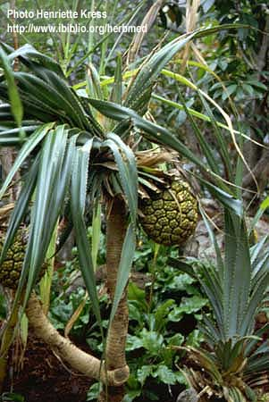

Pandanus
tectorius
Sol.ex Park.
----- Taxonomic Details

----- Correct Name
----- Classification
----- Synonyms
----- Common Names
Other Biological Details
----- Habit and Habitat
----- Diagnostic Features
----- Reproductive Biology
---------- Breeding System
---------- Phenology
---------- Pollinators
---------- Seed Biology
----------Seed Germination
------ Cultivation
----- Major Pests and Diseases
Economic Potential and Uses
----- Parts Used
----- Uses
----- Harvesting Practices
----- Produce and Products
----- Chemistry
----- Processing Techniques
----- Other uses
----- Economic Potential to the Country
----- Export Potential
Miscellaneous Information
Literature
Taxonomic
Details
Correct Name :
Pandanus
tectorius Sol.ex Park.

Family : Pandanaceae
Synonyms : Pandanus
fascicularis; Pandanus odoratissimus;
Common Names :
English: Screwpine, Pandanus
Hindi: Keora, Ketaki, Ketki, Kewda,
Bengali: Kedkikeya
keori, Keya,
Malayalam: Kaida,
Marathi: Keora, Keura, Thala,
Tamil: Kaitha, Talay, Tazrai,
Telugu: Mogai, Mogali,
Kannada: Kaida,
Back to Top
Other
Biological Details
HABIT & HABITAT

It is found near Coastal areas, Gardens and Roadsides, Hedges and
thickets, River bank and Sea coast.
Shrub or tree. It grows up to 25 feet (8m) or more in height, with aerial
prop roots and prickly stem
Availability :
Biotic Zone:Konkan and
Konkan plain.
Misc: Alibagh, Birma, Cale area and
Gansua.
Country: India.
Zone:Islands,South and Westzone.
State:Andaman & Nicobar, Goa Daman Diu, Maharashtra and Tamil Nadu.
District:Andaman, Daman, Dharmapuri, Goa, Raigad, Salem, South Arcot and
Tiruchi.
Taluk:Salcete,
Status :
Back to Top
DIAGNOSTIC FEATURES

Leaves: Linear leaves spirally arranged at branch tips, up
to 6 feet (2m) or more length, M-shaped in cross section, margins and midrib of
lower surface prickly (serrate).
Flowers: Male flowers tiny, in dense, white inflorescences
with large white bracts. Female flowers in a head. Both appear at branch tips.
Fruit: Globose shape, separated pieces (phalanges) are
tooth-like shape (angular), wedge-shape orange sections (prudes) are edible,
husk fibrous, one to several-seeded.
Back to Top
REPRODUCTIVE BIOLOGY
Breeding System :
Phenology :
The flowering occurs during
September-October.
Pollinators:
Seed Biology :
Seed Germination:
Cultivation:
It is propogated through 20-30 cm long cuttings made from 8-10 cm
thick stems.While making the cuttings non-flowering shoots and old stumps are
preferred.They are planted in specially prepared sand beds under the shade for
sprouting.The beds are regularly watered and in about 45-50 days when they start
sprouting,they are ready for transplanting in to the main field.
Back to Top
MAJOR PESTS & DISEASES
Pests:
Diseases:Leaf bright and stem rot.
Back to Top
Economic
Potential and Uses
Parts used
Leaves,Roots,Fruit.
Uses
- Pandanus tectorius
is one of the most useful trees in Micronesia.
- The leaves, which are the most useful
part of the plant, are woven or plaited into mats, thatch, sails, baskets,
hats, local fans, marmars, anticrafts, and many other items.
Harvesting
Practices
Plants start producing flowers when they are 5 years old.A five year old plant
would attain an average height of 170 cm with a stem circumference of 50 cm and
with 20-25 aerial roots and on an average bears 4 flowers.
Produce and Products
Back to Top
Chemistry
Back to Top
Processing Techniques
Back to Top
Other Uses
- Tip of prop roots are eaten and are
often used as native medicine in Pohnpei and maybe in other Micronesian
islands as well.
- The fruit is a major source of food in
Micronesia especially on the atolls.
- They can be eaten raw or cooked.
Either way, it is very healthy. Besides serving as a food, its fibrous helps
clean the teeth, acting as a natural dental floss.
Economical
Potential to the country
Back to Top
Export Potential
Back to Top
Miscellaneous
Information
Literature
- http://www.ibiblio.org/herbmed/pictures/p10/pages/pandanus-tectorius.htm
- http://www.geocities.com/TheTropics/Cabana/4705/angio/pandanus.html
- http://www.hear.org/starr/hiplants/images/600max/html/starr_030729_0031_pandanus_tectorius.htm
Back to Top